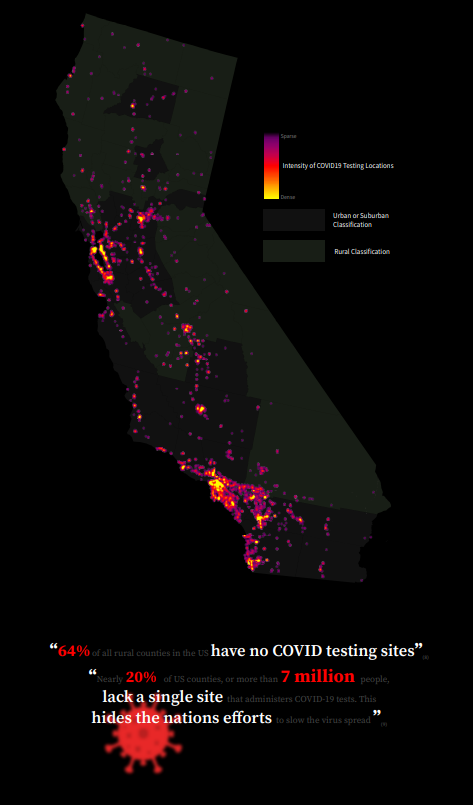

Appalachian Bike Tour
This map was made in my GEOG572 Class. The hillshade was classed in ArcPro, and further refind in Adobe Photoshop. All vector elements were designed in Adobe Illustrator.

California COVID-19
This map was made in GEOG572 Class.This map portrays a series of maps and inforgraphics designed in ArcPRO and Adobe Illustrator highlighting COVID cases across rural California.